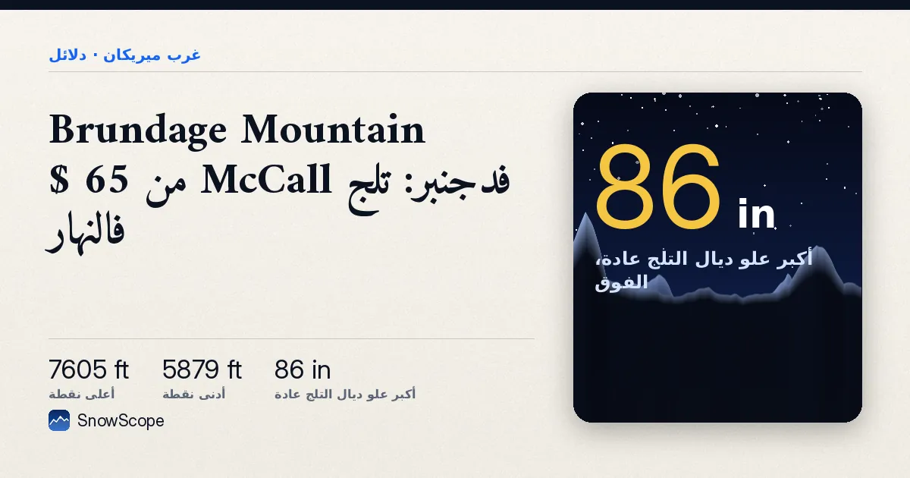

Brundage Mountain فدجنبر: تلج McCall من 65 $ فالنهار
Brundage كتقع فوق McCall، دية بلاصة هادية على البحيرة فـ وسط إيداهو، وكتعطي وحدة من أحسن السجلات ديال التلج فـ أول الموسم فـ المنطقة. البطاقات كتابدا من 65 دولار كاع إذا حجزتي وقت، شي لي كيخليها خيار غير غالي لـ التزلج فـ ديسمبر قبل ما يبدا السعر يطلع فـ الأعياد.
شوف توقعات التلج مباشرة ديال Brundage Mountain فالتطبيق ديال SnowScopeالعلو ديال التلج، التنبيهات والخريطة 3D، فابور.
الجبل والبلاصة
Brundage كتقع شمال بحيرة Payette، فيها 6 تليفريك وحوالي 30 كم (49 كم) ديال البيستات موزعين على 526 متر ديال الارتفاع. القاعدة كتقع على 5,880 قدم (1,792 متر)، منتصف الجبل حوالي 6,740 قدم (2,055 متر)، والقمة على 7,600 قدم (2,318 متر). دية محطة صغيرة كتسيرها أهالي البلاصة، والجو كاع هادي والطوابير قصيرة فـ أيام الأسبوع.
McCall روحها بلاصة جبلية فيها فنادق وأكلات ومحلات. الطريق من Boise كتمشي فـ وادي نهر Payette—الديار حتا لكن الطريق ملتوية، فاللازم تخصص وقت زيادة وكتاخد السلاسل معاك فـ الشتا.

واش التلج كيجي وكيستقر
التلج اللي كيبقا عادة كيوصل لـ منتصف الجبل بحوالي منتصف أكتوبر. طول ديسمبر، الاحتمالية ديال عمق التلج اللي يصلح للتزلج (20 إنش / 50 سم أو أكثر كمعدل اسبوعي) كتبدا تطلع: 67 في المية من الشتوات اللي فاتو عندهم غطا حسن فـ أول أسبوع ديال ديسمبر، 85 في المية فـ الأسبوع الثاني، 93 في المية فـ الثالث، و96 في المية فـ الأسبوع ديال عيد الميلاد.
فـ العمق الحقيقي، يوم 1 ديسمبر عادي كيكون فيه 22 إنش (55 سم) فـ منتصف الجبل؛ بحوالي 15 ديسمبر يطلع لـ 30 إنش (77 سم)، وبحلول يوم عيد الميلاد كيوصل لـ 38 إنش (97 سم). فـ القاعدة، الأرقام أقل لكن زالين موثوقين: 17 إنش (43 سم) على 1 ديسمبر و22 إنش (57 سم) على 15 ديسمبر، و65 في المية من الشتوات اللي فاتو كتجاوز 20 إنش بحوالي منتصف الشهر.

الاتجاه: التلج أقل فـ أول الموسم
عمق التلج فـ أول ديسمبر نقص شوية مع الوقت. فـ أول 15 شتا من السجل ديالنا لـ 46 شتا (1980–81 لـ 1994–95)، منتصف الجبل كان عادة فيه 33 إنش (83 سم) على 15 ديسمبر. فـ آخر 15 شتا (2011–12 لـ 2025–26)، الرقم نزل لـ 24 إنش (61 سم). نسبة الشتوات اللي فيها غطا حسن نزلت من 93 في المية لـ 80 في المية.
الشتا اللي فاتت (2025–26) شافت نفس الحاجة: كان فيه بونا 19 إنش (47 سم) فـ منتصف الجبل على 15 ديسمبر. أول ديسمبر أقل الآن، فـ الصبر كيدوي—اتنتايا لـ النص الثاني ديال الشهر باش ماتقلقش.
ثمن البطاقات والمشاريع ديال التزلج
Brundage كتستعمل الأسعار الديناميكية. بطاقات اليوم الواحد كتابدا من 65 دولار فـ أيام معينة لكن الثمن كيطلع كاع كاع ما تقترب من الزيارة. فترة الذروة ديال الأعياد كتمشي من 19 ديسمبر 2026 لـ 3 يناير 2027، وقتها الأسعار كتطلع بقوة.
إذا كنت بغيت تزور مرات متعددة، الـ Indy Pass كيعطيك خير: Indy Base Pass كيكلف 419 دولار وكيتعطيك يومين فـ كل واحد من 300 بونا محطة عضو (مع أيام ممنوعة)؛ Indy+ Pass كيكلف 469 دولار وتاخد الممنوعات. Brundage عضو.
Brundage، Schweitzer و Lookout Pass فـ المقارنة
المنطقة فيها خيارات أخرى قريبة. Schweitzer Mountain، شمال شرق Brundage، كتقع أقل لكن التلج فيها أعمق فـ الأماكن العالية: يوم 15 ديسمبر عادي كيجي فيها 54 إنش (138 سم) فـ منتصف الجبل. كتعطي بطاقة 3 أيام بـ 249 دولار (تقريبا 83 دولار فـ اليوم). Lookout Pass، جنوب على حد الولايات، عندها تلج قرايب Brundage فـ منتصف الجبل—30 إنش (75 سم) على يوم 15 ديسمبر عادي—وكتبيع بطاقات أيام الأسبوع بـ 63 دولار إذا حجزتي وقت.
الميزة ديال Brundage هي الاستقرار فـ الأماكن المنخفضة والمرونة فـ السعر. بـ نسبة للتزلج من القاعدة لـ منتصف الجبل اللي كاع فـ ديسمبر، كتعطي فرص جيدة ديال التلج والسعر الأقل من الثلاثة.
واش نجي الزيارة ديالك
احجز البطاقة بـ وقت: أسعار Brundage كتجازي الحجز المبكر. الأسبوع الثاني ديال ديسمبر (ابتداء من حوالي 7 ديسمبر) فيه 85 في المية احتمالية تلج حسن وجاي قبل الزحام ديال الأعياد. الأسبوع الثالث—من 14 لـ 20 ديسمبر—كيعطي غطا أحسن كاع (93 في المية) والأسعار زالين أقل من فترة الذروة.
إذا كانت التواريخ ديالك مرنة، اتبعد من 19 ديسمبر لـ قدّام. إذا ضروري تزلج فـ أسبوع عيد الميلاد، اتوقع أسعار أعلى لكن عمق التلج ممتاز: 38 إنش (97 سم) فـ منتصف الجبل عادي على 25 ديسمبر، و96 في المية من الشتوات اللي فاتو جاوزات 20 إنش فـ ذاك اليوم.
نصايح للي كيتزلجو
- اشري البطاقة بـ الأقل أسبوعين لـ ثلاثة أسابيع قدّام باش تقفل السعر ديال 65 دولار؛ نظام ديناميكي Brundage كيفرض ثمن أعلى على الحجز فـ آخر لحظة.
- اركز على الأسبوع الثاني أو الثالث ديال ديسمبر باش تلقا أحسن مزيج من عمق التلج والأسعار المنخفضة؛ اتبعد من فترة 19 ديسمبر لـ 3 يناير إذا كانت التواريخ ديالك مرنة.
- فـ منتصف الجبل (6,740 قدم / 2,055 متر)، أحتمالية كبيرة تلقا تلج يصلح للتزلج طول ديسمبر. القاعدة أقل؛ تفقد الأحوال قبل ما تقود من Boise إذا كنت بغيت تزلج فـ أول الشهر.
- طريق وادي نهر Payette كيكون ممكن الجليد يغطيها؛ خصص وقت أكثر من Boise واحمل أو اكتري سلاسل، حتا لو التوقعات كتقول شي حاجة أخرى.
- باش تعرف أحوال الانهيارات الحالية إذا كنت بغيت تخرج من البيستات المرسومة، تفقد النشرة الرسمية على avalanche.org.
على هاد الأرقام
العلو ديال التلج فالمحطات هو أكثر تلج فالجهة الفوقانية فالتاريخ المكتوب؛ هادو تقديرات لمنطقة، ماشي قياس فنقطة وحدة. التوقعات يمكن تتبدل. ديما شوف النشرة الرسمية ديال الانهيارات قبل ما تخرج من البيست.
النشرات الرسمية ديال الانهيارات: avalanche.org (US national portal)
كيفاش تستاشهد بهاد المقال
للبحث، التعليم ولا الصحافة: الأرقام والرسومات تقدر تعاود تخدم بيهم بحرية تحت CC BY 4.0 مع هاد الاستشهاد.
SnowScope (2026), Brundage Mountain فدجنبر: تلج McCall من 65 $ فالنهار, https://snowscope.app/blog/ar/2026/11/brundage-mountain-mccall-december-ski-budget.html, تشاف ف 2026-11-14
SnowScope (Atlas Labs). (2026, November 14). Brundage Mountain فدجنبر: تلج McCall من 65 $ فالنهار. SnowScope snow reports. https://snowscope.app/blog/ar/2026/11/brundage-mountain-mccall-december-ski-budget.html
BibTeX
@misc{snowscope2026brundagemountainmccallde,
author = {{SnowScope (Atlas Labs)}},
title = {Brundage Mountain فدجنبر: تلج McCall من 65 $ فالنهار},
year = {2026},
month = nov,
howpublished = {\url{https://snowscope.app/blog/ar/2026/11/brundage-mountain-mccall-december-ski-budget.html}},
note = {Published 2026-11-14 20:07 UTC; accessed 2026-11-14}
}· CC BY 4.0 · الطريقة، الداتا والأدوات →
Brundage Mountain: التلج والحرارة حسب العلو، هاد الشتا مقارنة مع اللي فاتت (الأدوات) →
تابع Brundage Mountain
فابور: ميساج ملي يجي التلج، والتوقعات كل صباح.